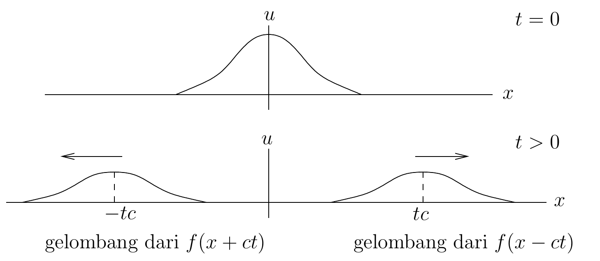
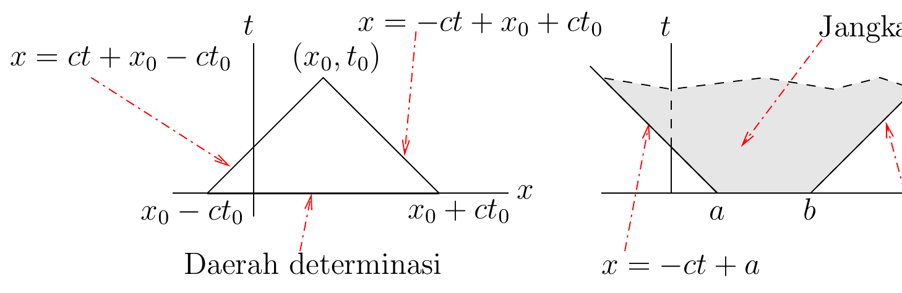
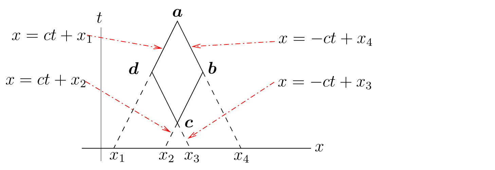
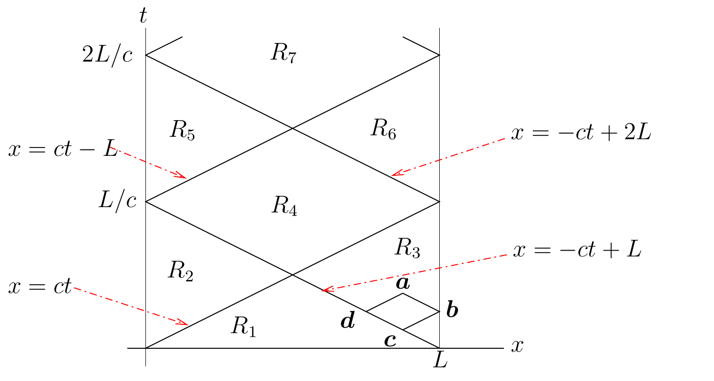

Batas sumber. Bagian ini mengikat
wave_equ.tex baris 1-389 pada sumber beku.
Persamaan Gelombang
dalam Satu Dimensi
Bab ini membahas persamaan gelombang
Konstanta
disebut cepat rambat. Kita akan segera
menjelaskan mengapa
diberi nama ini. Kita juga akan mengasumsikan bahwa solusi persamaan
gelombang memenuhi beberapa syarat awal dan syarat batas sesuai dengan
domain persamaan gelombang tersebut.
Metode D’Alembert
Pada Garis Real
Perhatikan persamaan gelombang
(7.1.1)
dengan syarat awal
(7.1.2)
untuk dua fungsi
dan
.
Kemulusan fungsi
dan
akan ditentukan kemudian.
Seperti yang telah kita lihat pada Bagian 2.3.2,
persamaan gelombang merupakan persamaan diferensial parsial hiperbolik.
Kita dapat menggunakan suatu perubahan variabel untuk mereduksi
persamaan gelombang menjadi bentuk standar bagi suatu persamaan
hiperbolik. Sekarang kita ulangi proses reduksi ini. Persamaan gelombang
berbentuk
dengan
,
dan
.
Simbol utamanya adalah
Persamaan gelombang
bersifat hiperbolik pada
karena
. Solusi
persamaan diferensial
berturut-turut adalah
dan
.
Kurva level dari
dan
merupakan kurva karakteristik. Kita menggunakan perubahan koordinat
dan
untuk mereduksi persamaan gelombang.
Kita harus menyelesaikan persamaan diferensial parsial
(7.1.3)
Mengintegralkan (7.1.3)
terhadap
menghasilkan
untuk suatu fungsi
.
Mengintegralkan
terhadap
menghasilkan
untuk suatu fungsi
.
Jika kita memperkenalkan fungsi
yang didefinisikan oleh
,
maka kita memperoleh solusi
Sekarang kita tinjau syarat awal dalam (7.1.2).
Fungsi
dan
memenuhi persamaan
Jika kita mengasumsikan bahwa
terintegralkan lokal, kita dapat menulis
Kita memperoleh dua persamaan yang saling bebas linear untuk
dan
.
(7.1.5)
dan
(7.1.6) Dengan
menjumlahkan (7.1.5)
dan (7.1.6),
lalu membaginya dengan
,
kita memperoleh
Dengan mengurangkan (7.1.6)
dari (7.1.5),
lalu membaginya dengan
,
kita memperoleh
Akhirnya, kita memperoleh
(7.1.7)
Jika
dan
,
maka (7.1.7)
memberikan solusi berkelas
untuk (7.1.1)
dengan syarat awal (7.1.2).
Jika
,
maka solusi persamaan gelombang adalah
.
Pada Gambar 7.1,
kita telah mengilustrasikan perilaku solusi ini terhadap waktu.

Dua gelombang merambat dari deformasi
awal ke arah berlawanan dengan cepat rambat c.
Nilai
pada titik tetap
dan waktu
ditentukan oleh nilai
pada
dan nilai
di antara
dan
.
Karena alasan ini, interval
disebut daerah determinasi bagi
pada
.
Sebaliknya, nilai
dan
pada interval
hanya memengaruhi nilai
untuk
dan
.
Daerah
disebut jangkauan pengaruh dari interval
.
Definisi-definisi ini diilustrasikan pada Gambar 7.2.
Diskontinuitas syarat awal untuk
pada
merambat seketika sepanjang garis-garis karakteristik yang berasal dari
.

Diagram ruang-waktu yang menunjukkan
daerah determinasi suatu titik dan jangkauan pengaruh suatu
selang.
Contoh.
Sketsakan solusi
dari persamaan gelombang
dengan syarat awal
untuk
.
Kita mengasumsikan bahwa
,
,
dan
adalah konstanta positif sembarang.
Dari (7.1.7),
kita memperoleh bahwa
. Karena data awal ini
diskontinu, rumus tersebut memberi solusi dalam pengertian distribusi
pada seluruh domain dan solusi klasik potongan demi potongan di luar
garis-garis diskontinuitas. Dengan demikian, kita memperoleh sketsa
solusi berikut.
Pada Interval Setengah
Takhingga
Dalam bagian ini, kita meninjau persamaan gelombang
dengan syarat batas
(7.1.8)
dan syarat awal
Seperti pada bagian sebelumnya, kita dapat menggunakan perubahan
koordinat
dan
untuk mereduksi persamaan gelombang menjadi (7.1.3).
Pengintegralan persamaan ini menghasilkan
(7.1.9)
untuk fungsi
dan
tertentu. Dalam variabel
dan
,
kita memperoleh solusi
selama
.
Dengan bantuan syarat awal seperti pada bagian sebelumnya, kita
memperoleh
(7.1.10)
untuk
.
Sekarang kita meninjau apa yang terjadi ketika
.
Kita menggunakan syarat batas (7.1.8)
untuk memperoleh
untuk
.
Jadi,
untuk
.
Sekarang kita dapat melanjutkan seperti yang kita lakukan untuk kasus
.
(7.1.11) untuk
.
Untuk
,
nilai
pada titik
dan waktu
yang tetap ditentukan oleh nilai
di
dan nilai
di antara
dan
.
Untuk
,
nilai
pada titik
dan waktu
yang tetap ditentukan oleh nilai
di
dan nilai
di antara
dan
.
Interval
adalah daerah determinasi untuk
di
ketika
.
Contoh.
Sketsakan solusi persamaan gelombang
untuk
dan
dengan syarat awal
dan
untuk
,
serta syarat batas
untuk
.
Dengan menggunakan (7.1.10)
dan (7.1.11),
kita memperoleh sketsa solusi berikut.
Pada Interval Berhingga
Pertama-tama kita menurunkan metode grafis untuk menentukan solusi
dari persamaan gelombang
dengan
syarat batas
dan syarat awal
Fungsi-fungsi
,
,
,
dan
diberikan.

Diagram karakteristik untuk metode grafis
persamaan gelombang satu dimensi, dengan titik a, b, c, dan
d.
Persamaan (7.1.4)
tetap berlaku untuk
.
Perhatikan Gambar 7.3.
Kita mengetahui bahwa
konstan di sepanjang garis
dan
,
sedangkan
konstan di sepanjang garis
dan
.
Oleh karena itu,
Dengan demikian,
(7.1.12)
Contoh 7.1.3.
Perhatikan Gambar 7.4.
Nilai-nilai
di dalam daerah
diberikan oleh (7.1.7).
Untuk mencari nilai
di
dalam
,
kita menggunakan (7.1.12).
diberikan oleh syarat batas pada
,
sedangkan
dan
diberikan oleh nilai-nilai
pada batas
.
Dengan melanjutkan secara rekursif, kita dapat menentukan
di setiap daerah
.

Pembagian bidang ruang-waktu menjadi
daerah karakteristik untuk metode D’Alembert dengan syarat awal dan
batas.
Apakah solusi yang telah kita definisikan kontinu? Di dalam daerah
,
akan selalu kontinu jika kita mengasumsikan bahwa
dan
.
Kita hanya perlu meninjau
di sepanjang garis-garis karakteristik. Dengan merujuk pada Gambar 7.4,
kita memperoleh
(7.1.13)
ketika
mendekati garis
.
Jika
,
maka
akan kontinu di sepanjang
yang membatasi
.
Demikian pula, agar
kontinu di sepanjang garis
yang membatasi daerah
,
kita memerlukan
.
Kita mengetahui bahwa
,
,
dan
dengan
dan
cukup untuk menjamin bahwa
kontinu pada domain
.
Solusi
akan berkelas
di dalam setiap
jika
dan
.
Solusi
bahkan akan berkelas
di dalam setiap
jika
dan
.
Persoalan kemulusan solusi terletak di sepanjang garis
dan
,
serta pantulannya pada garis batas
dan
.
Jika
,
,
,
,
,
,
,
,
dan
,
maka solusi
akan berkelas
pada seluruh domain. Syarat pada turunan orde kedua diperlukan agar
persamaan gelombang dipenuhi pada garis-garis karakteristik.
Syarat-syarat di atas merupakan syarat konsistensi untuk memperoleh
solusi klasik persamaan gelombang.
Atribusi dan hak. Karya sumber oleh Benoit Dionne
dilisensikan berdasarkan Creative
Commons Attribution-NonCommercial-ShareAlike 4.0 International.
Terjemahan dan perubahan yang dicatat menggunakan lisensi komponen yang
sama. Produksi terjemahan dan edisi dibantu OpenAI Codex gpt-5.6-sol,
Ultra; semua kredit penulis dan kontributor manusia tetap dipertahankan.
Ini bukan terbitan atau dukungan resmi Benoit Dionne maupun University
of Ottawa.